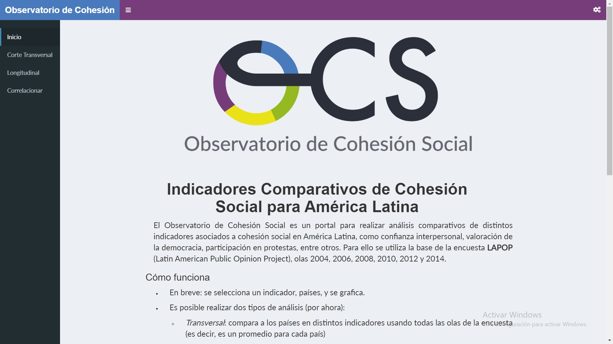
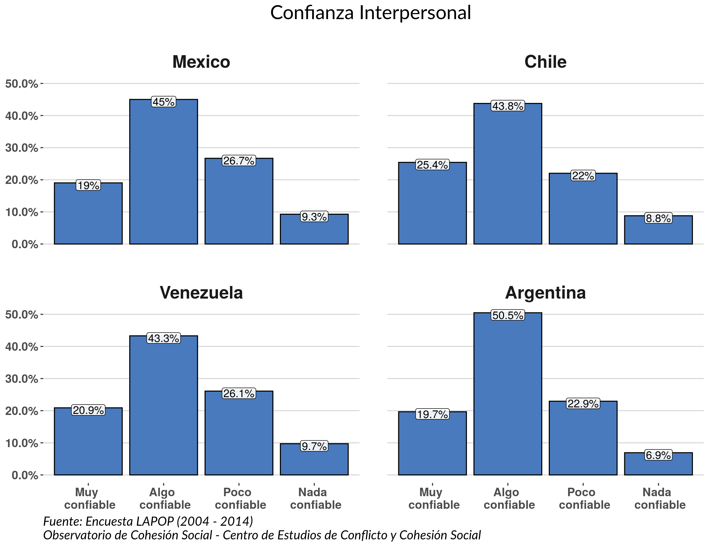
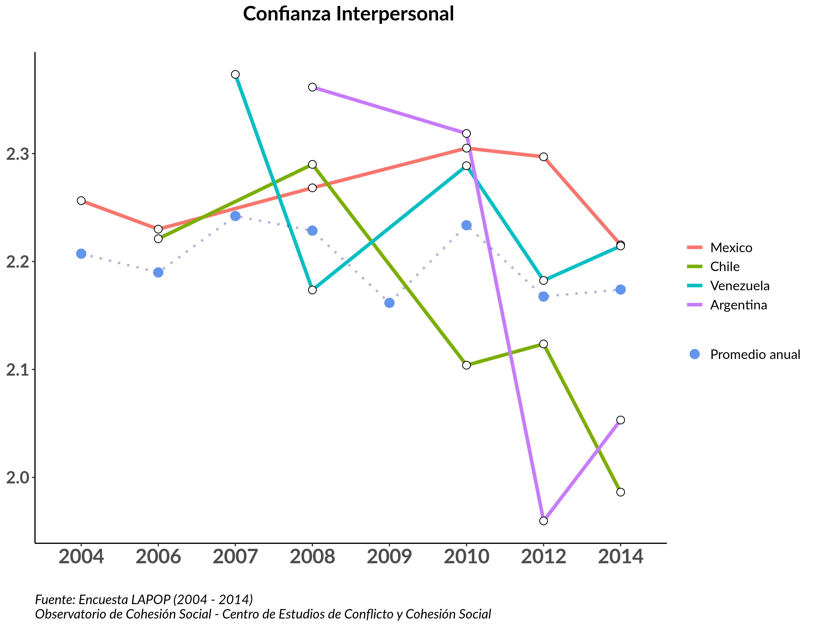

Observatorio de Cohesión Social
Julio César Iturra Sanhueza1, Juan Carlos Castillo1
1 Centro de estudio de Conflicto y Cohesión Social, Universidad de Chile.

Introducción
El Observatorio de Cohesión Social refiere a un esfuerzo por desarrollar un sitio web que integre distintas fuentes de datos y que a su vez posibilite el análisis comparativo de diversos indicadores relacionados a la cohesión social en países de América Latina. Estos indicadores se basan en experiencias internacionales (Council & others, 2014; Dragolov et al., 2013; Markus & Dharmalingam, 2013)
La creación del OCS busca poner a disposición de la comunidad académica nacional e internacional, la ciudadanía y los hacedores de políticas públicas un repositorio que centralice los datos disponibles y los entregue en formatos interactivos.
Objetivo
Reportar, documentar y analizar indicadores de cohesión social entre países de América Latina.
Datos
Los datos e indicadores permiten visualizar el estado y trayectoria de la cohesión social en 24 países de América. Para esto ha consolidado una base de datos que incluye las olas 2004, 2006, 2008, 2010, 2012 y 2014 del Latin American Public Opinion Project (LAPOP, 2017).
Indicadores
| Confianza en Eficacia Sistema Judicial | Gobernantes están Interesados en lo que la Gente Piensa |
| Confianza en Ejecutivo | Redistribución |
| Confianza en Fuerzas Armadas | Derechos Básicos están Protegidos por el Sistema Político |
| Confianza en Iglesia Católica | Interés en Política |
| Confianza en Iglesias Evangélicas/Protestantes | Orgullo con el Sistema Político |
| Confianza en Partidos Políticos | Participar en Protesta |
| Confianza en Sistema Judicial | Percepción de Corrupción Pública |
| Confianza Interpersonal | Respeto por la Propiedad Privada |
| Democracia es mejor que otras Formas de Gobierno | Respeto por las Instituciones |
| Evaluación Gob. Combatiendo Corrupción | Satisfacción con la Democracia |
| Evaluación Gob. en Seguridad Ciudadana | Voto en Últimas Elecciones Presidenciales |
| Evaluación Gob. del Gobierno Manejando Economía |
Programación
La aplicación fue programada usando la librería Shiny (Chang et al., 2017) para el lenguaje de programación R (R Core Team, 2019) en su versión 3.6.1.
Funcionamiento
En primera instancia la manera de realizar análisis implica la selección de un indicador, un o más países, y finalmente la visualización.
Es posible realizar dos tipos de análisis:
Transversal: compara a los países en distintos indicadores usando todas las olas de la encuesta (es decir, es un promedio para cada país)
Longitudinal: se compara a los países considerando los distintos momentos en el tiempo del indicador seleccionado.
Interfaz

Secciones principales:
- Inicio
- Corte transversal
- Longitudinal
- Correlacionar (en desarrollo)
Tanto en la sección Corte Transversal como Longitudinal podremos encontrar dos elementos principales que permiten pedirle a la aplicación que visualize lo que deseamos.
Primero seleccionamos el indicador y el país
: Botón para comenzar la visualización.
: Botón para descargar los resultados en formato PNG o PDF.
Resultados


Conclusión
El desarrollo del OCS ofrece al público académico y no académico, una aproximación al estado de la cohesión social en América Latina en los últimos años. Adicionalmente, siguiendo un flujo de trabajo basado en los principios de la Ciencia Abierta, todo el procedimiento de programación es abierto y de acceso libre, y por tanto, reproducible.
Referencias
Chang, W., Cheng, J., Allaire, J., Xie, Y., McPherson, J., & others. (2017). Shiny: Web application framework for R. R Package Version, 1(5).
Council, N. R., & others. (2014). Civic engagement and social cohesion: Measuring dimensions of social capital to inform policy. National Academies Press.
LAPOP, V. U. (2017). Latin American Public Opinion Project (LAPOP), 2004-2015 [28 COUNTRIES]: Version 1. https://doi.org/10.3886/icpsr36562.v1
Markus, A., & Dharmalingam, A. (2013). Mapping social cohesion. The Scanlon Foundation Surveys: National Report 2013.
R Core Team. (2019). R: A language and environment for statistical computing. Vienna, Austria: R Foundation for Statistical Computing.